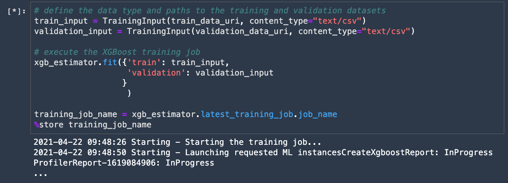
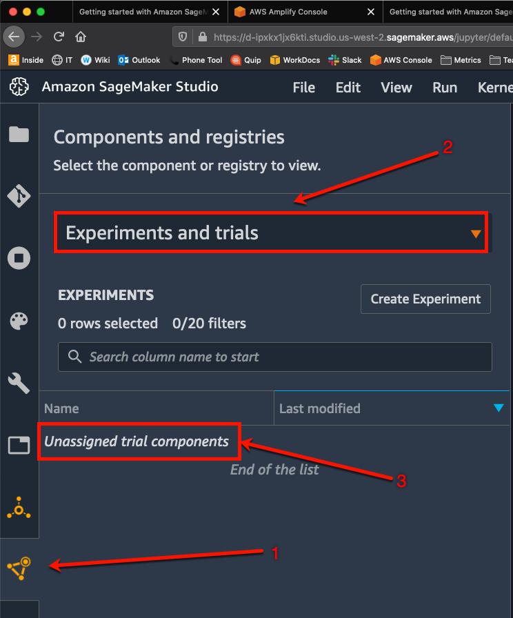
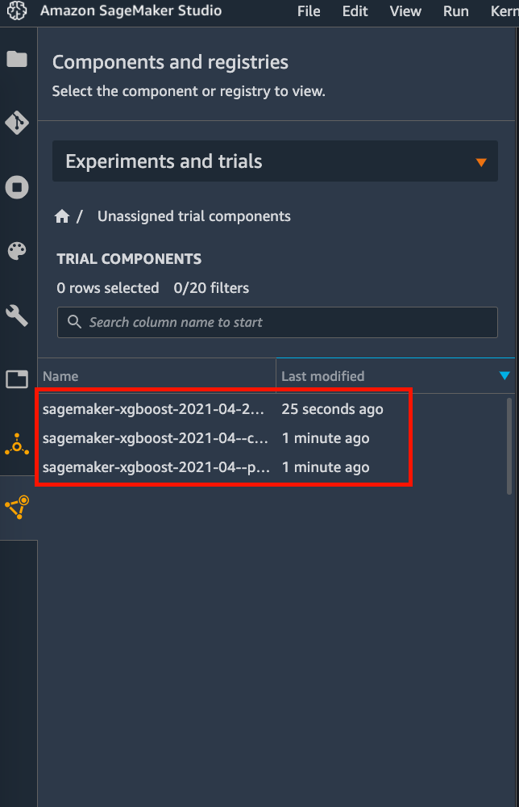
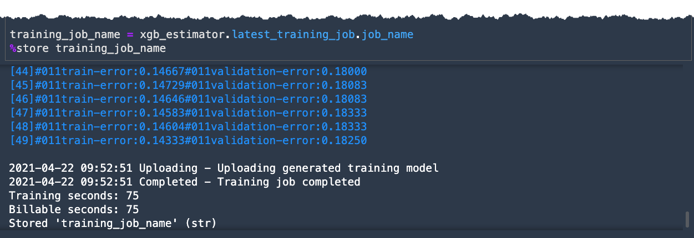
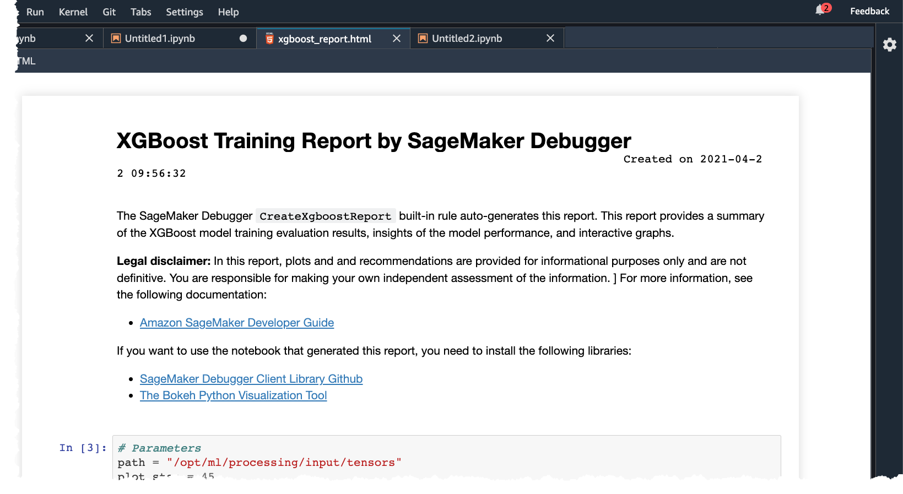
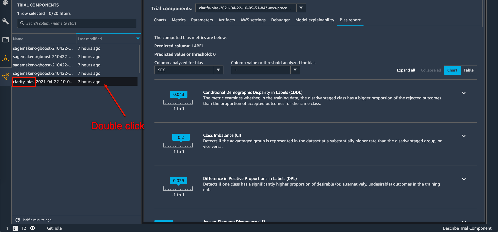

3.1 Train an XGBoost model
Start this section in a new Jupyter notebook with the Data Science kernel
Import necessary packages
import os
import json
import time
import pandas as pd
from IPython.display import FileLink, FileLinks
import s3fs
import boto3
from sklearn.model_selection import train_test_split
import sagemaker
from sagemaker import clarify
from sagemaker.session import Session
from sagemaker.inputs import TrainingInput
from sagemaker.xgboost.estimator import XGBoost
from sagemaker.debugger import Rule, rule_configsSet region, boto3 and SageMaker SDK variables
#You can change this to a region of your choice
region = sagemaker.Session().boto_region_name
print("Using AWS Region: {}".format(region))
boto3.setup_default_session(region_name=region)
boto_session = boto3.Session(region_name=region)
s3_client = boto3.client('s3', region_name=region)
sagemaker_boto_client = boto_session.client('sagemaker')
sagemaker_session = sagemaker.session.Session(
boto_session=boto_session,
sagemaker_client=sagemaker_boto_client)
sagemaker_role = sagemaker.get_execution_role()
account_id = boto3.client('sts').get_caller_identity()["Account"]
s3 = s3fs.S3FileSystem(anon=False)
random_state = 42%store
%store -rPrepare your dataset
Read dataset from Amazon S3
df = pd.read_csv(s3_raw_data)
print(df.shape)Drop ID column, rename and reorder LABEL column
This section implements the same steps you performed in Data Wrangler in the previous section.
# move the target column to the begining based on XGBoost
cols = list(df)
cols.insert(0, cols.pop(cols.index('default payment next month')))
df = df.loc[:, cols]
# rename to `LABEL`
df.rename(columns={"default payment next month": "LABEL"}, inplace=True)
df['LABEL'] = df['LABEL'].astype('int')
# drop feature store created columns
df = df.drop(columns=['ID'])# store headers
header = list(df.columns)
%store headerlocal_processed_path = f'{local_data_dir}/df_processed.csv'
df.to_csv(local_processed_path, index=False)
%store local_processed_path
print(df.shape)
df.head()Split DataFrame into Train, Validation & Test Sets
X_train, X_test = train_test_split(df, test_size=0.2, random_state=random_state)
X_train, X_val = train_test_split(X_test, test_size=0.2, random_state=random_state)X_train.to_csv(f'{local_data_dir}/train.csv', header=False, index=False)
response = sagemaker_session.upload_data(f'{local_data_dir}/train.csv',
bucket=default_bucket,
key_prefix=data_prefix)
train_data_uri = response
%store train_data_uriX_val.to_csv(f'{local_data_dir}/validation.csv', header=False, index=False)
response = sagemaker_session.upload_data(f'{local_data_dir}/validation.csv',
bucket=default_bucket,
key_prefix=data_prefix)
validation_data_uri = response
%store validation_data_uriX_test.to_csv(f'{local_data_dir}/test.csv', header=False, index=False)
response = sagemaker_session.upload_data(f'{local_data_dir}/test.csv',
bucket=default_bucket,
key_prefix=data_prefix)
test_data_uri = response
%store test_data_uriTrain a model using XGBoost
Set the hyperparameters
hyperparameters = {
"max_depth": "5",
"eta": "0.2",
"gamma": "4",
"min_child_weight": "6",
"subsample": "0.7",
"objective": "binary:logistic",
"num_round": "50"}
%store hyperparametersCreate and fit the estimator
train_instance_count = 1
train_instance_type = "ml.m4.xlarge"
content_type = "text/csv"
estimator_output_path = f's3://{default_bucket}/{prefix}/training_jobs'
# this line automatically looks for the XGBoost image URI and builds an XGBoost container.
# specify the repo_version depending on your preference.
xgboost_container = sagemaker.image_uris.retrieve("xgboost", region, "1.2-1")
rules=[
Rule.sagemaker(rule_configs.create_xgboost_report())
]
# construct a SageMaker estimator that calls the xgboost-container
xgb_estimator = sagemaker.estimator.Estimator(image_uri=xgboost_container,
hyperparameters=hyperparameters,
role=sagemaker.get_execution_role(),
instance_count=train_instance_count,
instance_type=train_instance_type,
volume_size=5, # 5 GB
output_path=estimator_output_path,
rules=rules
)# define the data type and paths to the training and validation datasets
train_input = TrainingInput(train_data_uri, content_type="text/csv")
validation_input = TrainingInput(validation_data_uri, content_type="text/csv")
# execute the XGBoost training job
xgb_estimator.fit({'train': train_input,
'validation': validation_input
}
)
training_job_name = xgb_estimator.latest_training_job.job_name
%store training_job_nameYou should the training start in your Jupyter Notebook: 
SageMaker automatically tracks your training jobs. Click on the last option on the menu pane on the left as show in the image below. In the drop down on the top, choose Experiments and trials.
Double click on Unassigned trials
You should see 1 training job and 2 processing jobs. 

After training is complete, you’ll see the total training time and billable seconds on the jupyter notebook. 
Next we create a SageMaker model using the trained model in the previous step.
model_name = f'{training_job_name}-model'
model = xgb_estimator.create_model(name=model_name)
container_def = model.prepare_container_def()
sagemaker_session.create_model(model_name,
sagemaker_role,
container_def)Debugger Training Report
Amazon SageMaker Debugger allows debugging machine learning training. Amazon SageMaker Debugger helps you to monitor your training in near real time using rules and would provide you alerts, once it has detected inconsistency in training.
To view the debugger report, right click on the training job under Experiments and trial on the left pane, and click Open Debugger for insights
To download the report click Download report as shown in the screenshot below. This will download an HTML file. An example of this report is in the Appendix section of this workshop.

You can also manually download the reports from Amazon S3 for local use.
#get name of profiler report
profiler_report_name = [rule["RuleConfigurationName"]
for rule in xgb_estimator.latest_training_job.rule_job_summary()
if "Profiler" in rule["RuleConfigurationName"]][0]
#get name of the xgboost training report
xgb_profile_job_name = [rule["RuleEvaluationJobArn"].split("/")[-1]
for rule in xgb_estimator.latest_training_job.rule_job_summary()
if "CreateXgboostReport" in rule["RuleConfigurationName"]][0]
base_output_path = os.path.dirname(xgb_estimator.latest_job_debugger_artifacts_path())
rule_output_path = os.path.join(base_output_path, "rule-output/")
xgb_report_path = os.path.join(rule_output_path, "CreateXgboostReport")
profile_report_path = os.path.join(rule_output_path, profiler_report_name)profile_report_pathwhile True:
xgb_job_info = sagemaker_session.describe_processing_job(xgb_profile_job_name)
if xgb_job_info["ProcessingJobStatus"] == "Completed":
break
else:
print(f"Job Status: {xgb_job_info['ProcessingJobStatus']}")
time.sleep(30)
s3.download(xgb_report_path, "outputs/debugger/xgb/", recursive=True)
s3.download(profile_report_path, "outputs/debugger/profiler/", recursive=True)
display("Click link below to view the profiler report whcih will help you identify hardware bottlenecks.", FileLink("outputs/debugger/profiler/profiler-output/profiler-report.html"))
display("Click link below to view the XGBoost Training reports which will help you imporve your model", FileLink("outputs/debugger/xgb/xgboost_report.html"))Click on the locally downloaded profiler and xgboost SageMaker debugger reports

Here is an example of the XGBoost Training report 
Amazon SageMaker Clarify
Now that you have your model set up. Let’s say use Amazon SageMaker Clarify to detect bias. SageMaker Clarify helps you detect possible pre- and post-training biases using a variety of metrics.
clarify_processor = clarify.SageMakerClarifyProcessor(role=sagemaker_role,
instance_count=1,
instance_type='ml.m5.xlarge',
sagemaker_session=sagemaker_session)A DataConfig object communicates some basic information about data I/O to SageMaker Clarify. We specify where to find the input dataset, where to store the output, the target column (label), the header names, and the dataset type.
bias_report_output_path = 's3://{}/{}/clarify-output/bias_1'.format(default_bucket, prefix)
bias_data_config = clarify.DataConfig(s3_data_input_path=train_data_uri,
s3_output_path=bias_report_output_path,
label='LABEL',
headers=header,
dataset_type='text/csv')A ModelConfig object communicates information about your trained model. To avoid additional traffic to your production models, SageMaker Clarify sets up and tears down a dedicated endpoint when processing. * instance_type and instance_count specify your preferred instance type and instance count used to run your model on during SageMaker Clarify’s processing. The testing dataset is small so a single standard instance is good enough to run this example. If your have a large complex dataset, you may want to use a better instance type to speed up, or add more instances to enable Spark parallelization. * accept_type denotes the endpoint response payload format, and content_type denotes the payload format of request to the endpoint.
model_config = clarify.ModelConfig(model_name=model_name,
instance_type='ml.m5.xlarge',
instance_count=1,
accept_type='text/csv',
content_type='text/csv')A ModelPredictedLabelConfig provides information on the format of your predictions. XGBoost model outputs probabilities of samples, so SageMaker Clarify invokes the endpoint then uses probability_threshold to convert the probability to binary labels for bias analysis. Prediction above the threshold is interpreted as label value 1 and below or equal as label value 0.
predictions_config = clarify.ModelPredictedLabelConfig(probability_threshold=0.5)Writing BiasConfig
SageMaker Clarify also needs information on what the sensitive columns (facets) are, what the sensitive features (facet_values_or_threshold) may be, and what the desirable outcomes are (label_values_or_threshold). SageMaker Clarify can handle both categorical and continuous data for facet_values_or_threshold and for label_values_or_threshold. In this case we are using categorical data.
We specify this information in the BiasConfig API. Here we use SEX as the sensitive group.
group_name is used to form subgroups for the measurement of Conditional Demographic Disparity in Labels (CDDL) and Conditional Demographic Disparity in Predicted Labels (CDDPL) with regards to Simpson’s paradox.
bias_config = clarify.BiasConfig(label_values_or_threshold=[0],
facet_name='SEX',
facet_values_or_threshold=[1],
group_name='AGE'
)Post-training Bias
Computing post-training bias metrics does require a trained model.
Unbiased training data (as determined by concepts of fairness measured by bias metric) may still result in biased model predictions after training. Whether this occurs depends on several factors including hyperparameter choices.
You can run these options separately with run_pre_training_bias() and run_post_training_bias() or at the same time with run_bias() as shown below.
clarify_processor.run_bias(data_config=bias_data_config,
bias_config=bias_config,
model_config=model_config,
model_predicted_label_config=predictions_config,
pre_training_methods='all',
post_training_methods='all')
clarify_bias_job_1_name = clarify_processor.latest_job.name
%store clarify_bias_job_1_nameThis step takes several minutes to run and generate the bias reports
After the step is finished running, you can view the reports right in SageMaker Studio 
You can also download the reports from Amazon S3 using the code below.
s3_client.download_file(Bucket=default_bucket,
Key=f'{prefix}/clarify-output/bias_1/report.pdf',
Filename='./outputs/bias_1_report.pdf')
print(f'Downloaded clarify report from previous Clarify job: {clarify_bias_job_1_name}')
display("Click link below to view the Clarify repot.", FileLink("./outputs/bias_1_report.pdf"))

Model Lineage Tracking
Amazon SageMaker ML Lineage Tracking creates and stores information about the steps of a machine learning (ML) workflow from data preparation to model deployment. With the tracking information you can reproduce the workflow steps, track model and dataset lineage, and establish model governance and audit standards. With SageMaker Lineage Tracking data scientists and model builders can do the following:
- Keep a running history of model discovery experiments.
- Establish model governance by tracking model lineage artifacts for auditing and compliance verification.
- Clone and rerun workflows to experiment with what-if scenarios while developing models.
- Share a workflow that colleagues can reproduce and enhance (for example, while collaborating on solving a business problem).
Clone and rerun workflows with additional debugging or logging routines, or new input variations for troubleshooting issues in production models.
training_job_info = sagemaker_boto_client.describe_training_job(TrainingJobName=training_job_name)
Training data artifact
training_data_s3_uri = training_job_info['InputDataConfig'][0]['DataSource']['S3DataSource']['S3Uri']
matching_artifacts = list(sagemaker.lineage.artifact.Artifact.list(
source_uri=training_data_s3_uri,
sagemaker_session=sagemaker_session))
if matching_artifacts:
training_data_artifact = matching_artifacts[0]
print(f'Using existing artifact: {training_data_artifact.artifact_arn}')
else:
training_data_artifact = sagemaker.lineage.artifact.Artifact.create(
artifact_name='TrainingData',
source_uri=training_data_s3_uri,
artifact_type='Dataset',
sagemaker_session=sagemaker_session)
print(f'Create artifact {training_data_artifact.artifact_arn}: SUCCESSFUL')matching_artifactsModel artifact
trained_model_s3_uri = training_job_info['ModelArtifacts']['S3ModelArtifacts']
matching_artifacts = list(sagemaker.lineage.artifact.Artifact.list(
source_uri=trained_model_s3_uri,
sagemaker_session=sagemaker_session))
if matching_artifacts:
model_artifact = matching_artifacts[0]
print(f'Using existing artifact: {model_artifact.artifact_arn}')
else:
model_artifact = sagemaker.lineage.artifact.Artifact.create(
artifact_name='TrainedModel',
source_uri=trained_model_s3_uri,
artifact_type='Model',
sagemaker_session=sagemaker_session)
print(f'Create artifact {model_artifact.artifact_arn}: SUCCESSFUL')Set artifact associations
trial_component = sagemaker_boto_client.describe_trial_component(TrialComponentName=training_job_name+'-aws-training-job')
trial_component_arn = trial_component['TrialComponentArn']# input artifacts
input_artifacts = [training_data_artifact]
for a in input_artifacts:
try:
sagemaker.lineage.association.Association.create(
source_arn=a.artifact_arn,
destination_arn=trial_component_arn,
association_type='ContributedTo',
sagemaker_session=sagemaker_session)
print(f"Association with {a.artifact_type}: SUCCEESFUL")
except:
print(f"Association already exists with {a.artifact_type}")# output artifacts
output_artifacts = [model_artifact]
for a in output_artifacts:
try:
sagemaker.lineage.association.Association.create(
source_arn=a.artifact_arn,
destination_arn=trial_component_arn,
association_type='Produced',
sagemaker_session=sagemaker_session)
print(f"Association with {a.artifact_type}: SUCCESSFUL")
except:
print(f"Association already exists with {a.artifact_type}")Deposit Model and Lineage in SageMaker Model Registry
Create Model Package Group
A Model Package Groups holds multiple versions or iterations of a model. Though it is not required to create them for every model in the registry, they help organize various models which all have the same purpose and provide autiomatic versioning.
mpg_name = prefix
%store mpg_name
print(f'Model Package Group name: {mpg_name}')mpg_input_dict = {
'ModelPackageGroupName': mpg_name,
'ModelPackageGroupDescription': 'Credit Defualt Prediction'
}matching_mpg = sagemaker_boto_client.list_model_package_groups(NameContains=mpg_name)['ModelPackageGroupSummaryList']
if matching_mpg:
print(f'Using existing Model Package Group: {mpg_name}')
else:
mpg_response = sagemaker_boto_client.create_model_package_group(**mpg_input_dict)
print(f'Create Model Package Group {mpg_name}: SUCCESSFUL')
%store mpg_nameCreate and upload a metrics report
model_metrics_report = {'classification_metrics': {}}
for metric in training_job_info['FinalMetricDataList']:
stat = {metric['MetricName']: {'value': metric['Value']}}
model_metrics_report['classification_metrics'].update(stat)
with open('training_metrics.json', 'w') as f:
json.dump(model_metrics_report, f)
metrics_s3_key = f"{prefix}/training_jobs/{training_job_info['TrainingJobName']}/training_metrics.json"
s3_client.upload_file(Filename='training_metrics.json', Bucket=default_bucket, Key=metrics_s3_key)Define model metrics
model_metrics = {
'ModelQuality': {
'Statistics': {
'ContentType': 'application/json',
'S3Uri': f's3://{default_bucket}/{prefix}/{metrics_s3_key}'
}
},
'Bias': {
'Report': {
'ContentType': 'application/json',
'S3Uri': f'{bias_report_output_path}/analysis.json'
}
}
}Define the inference spec
inference_spec ={
"InferenceSpecification": {
"Containers" : [{
"Image": training_job_info['AlgorithmSpecification']['TrainingImage'],
"ModelDataUrl": training_job_info['ModelArtifacts']['S3ModelArtifacts']
}],
"SupportedTransformInstanceTypes": ["ml.m4.xlarge"],
"SupportedRealtimeInferenceInstanceTypes": ["ml.m4.xlarge"],
"SupportedContentTypes": ['text/csv'],
"SupportedResponseMIMETypes": ['text/csv']
}
}mp_input_dict = {
'ModelPackageGroupName': mpg_name,
'ModelPackageDescription': 'XGBoost classifier to detect insurance fraud.',
'ModelApprovalStatus': 'PendingManualApproval',
'ModelMetrics': model_metrics
}
mp_input_dict.update(inference_spec)
mp1_response = sagemaker_boto_client.create_model_package(**mp_input_dict)mp_info = sagemaker_boto_client.describe_model_package(ModelPackageName=mp1_response['ModelPackageArn'])
mp_status = mp_info['ModelPackageStatus']
while mp_status not in ['Completed', 'Failed']:
time.sleep(5)
mp_info = sagemaker_boto_client.describe_model_package(ModelPackageName=mp1_response['ModelPackageArn'])
mp_status = mp_info['ModelPackageStatus']
print(f'model package status: {mp_status}')
print(f'model package status: {mp_status}')# view model package in registry
sagemaker_boto_client.list_model_packages(ModelPackageGroupName=mpg_name)['ModelPackageSummaryList']